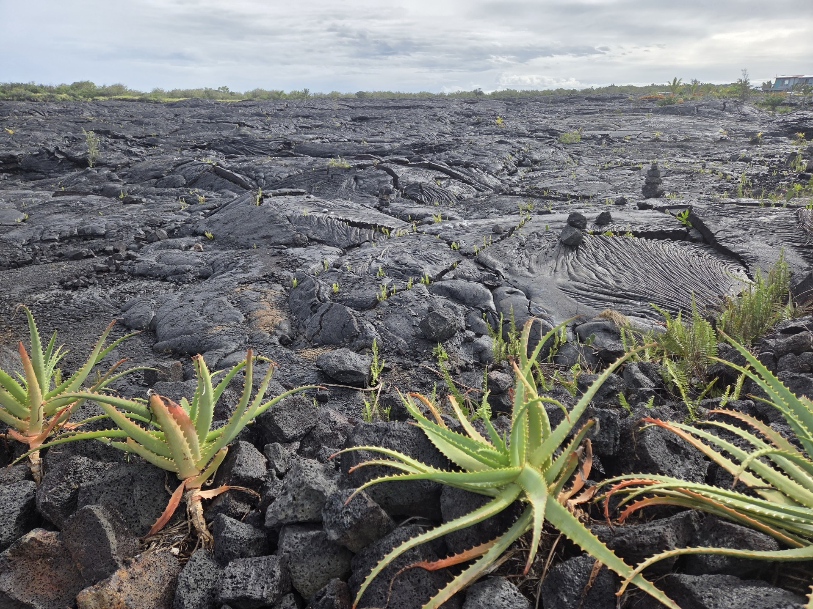
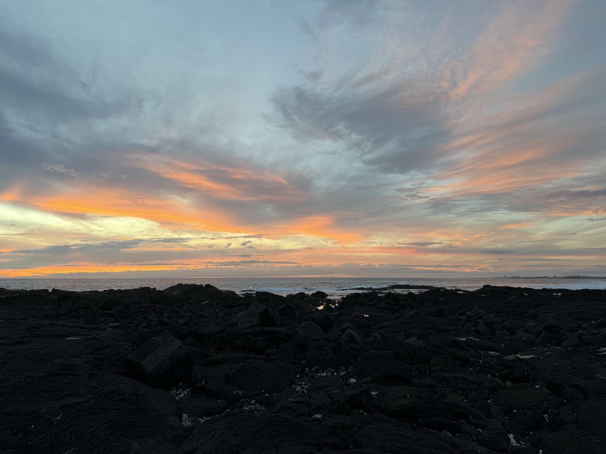

September 16th - 27th, 2026
A 12-day sacred journey through Peru's ancient ceremonial sites guided by master Huachumero Don Martin
Sacred Ways
For thousands of years, Huachuma (San Pedro) has been used by Andean shamans as a sacred bridge between worlds, opening the heart, expanding vision, and reconnecting the soul with nature, spirit, and the cosmos.
This is more than a retreat. It is a pilgrimage of remembrance across sacred landscapes, across time, and into the deepest parts of your being.
Guided by Don Martin, a master Huachumero and direct apprentice of Don Howard, one of the most respected Huachumeros of our time, you'll ceremonially activate the wisdom of five powerful sites, each chosen for its spiritual, historical, and energetic significance.
This is your opportunity to walk an ancient path of healing -- not just for the mind, but for the heart, the spirit, and the soul. To shed what no longer serves. To remember who you are beneath the layers. And to receive the deep medicine of the land, the lineage, and the sacred cactus that has been used in these regions for millennia.
Rooted in one of the oldest Huachuma traditions of the Andes, this pilgrimage is an invitation into ancestral healing, spiritual transformation, and embodied awakening. You'll be supported by the land, the medicine, and a small, intentional group walking beside you.
This journey is not for everyone. It's for those who feel the calling. To heal, to awaken, to remember.
Huachuma (also known as San Pedro) is one of the oldest and most revered sacred plant medicines in the world. For over 3,000 years (and likely longer) it has been used by Andean cultures for healing, vision, and communion with the natural and spiritual realms.
This sacred cactus is not just a medicine. It's a master teacher. Known to open the heart, clear emotional burdens, and reconnect us with the living intelligence of nature, Huachuma has long been used by curanderos and huachumeros to help people realign with their true selves, access deep insight, and awaken to a greater sense of connection with all of life.
Huachuma is considered one of Peru's two master teacher plants, alongside Ayahuasca. While Ayahuasca is known for its feminine mother spirit, inward visionary journeys, and intense purgative process, Huachuma is typically described as a masculine or grandfather spirit. It brings a grounded sense of clarity and a more outward-facing connection to the natural world.
Its legacy runs deep. The earliest known depictions of Huachuma ceremonies are found at Chavin de Huantar, an ancient temple dating back to at least 1500 BCE, considered the cradle of Andean civilization and the Great Temple of Universal Consciousness.
From the coastal pyramids of the Moche and Sican cultures to the high Andean mountains, Huachuma has served as a sacred bridge between worlds, uniting sky and earth, human and divine.
This pilgrimage is an opportunity to sit with this medicine in the very places where it has been worked with for thousands of years, guided by a master Huachumero and held in the heart of sacred ceremonial traditions.
We live in a world where many people today feel disconnected. From nature. From their deeper selves. From a sense of meaning or spiritual presence. Beneath the pace of modern life, it is common to carry unseen tension, unprocessed emotions, or a quiet sense that something essential is missing. This isn't just personal. It reflects something larger we are all part of. A collective drift from inner truth, from connection to the Earth, and from the sacred. What many are experiencing now is not just stress or confusion but a deeper longing to come home to themselves and to something greater.
And this longing isn't limited to times of challenge or struggle. Many come to this path from a place of strength, clarity, or success, sensing that there is still something more. An invitation to deepen, to refine, to open even further to spirit and purpose. Huachuma has been used for thousands of years as a medicine of reconnection. It helps people clear what no longer serves, open the heart, and remember their place in the living world. It is not a quick fix or an escape. It is a path of clarity, healing, and realignment with what matters most. Because what the world and each of us needs most right now is not more information or innovation. It is a renaissance of consciousness. A return to inner wisdom. To truth. To Spirit. This pilgrimage is not just about personal transformation. It's an invitation to realign with what truly matters and to carry that remembrance back into the world with humility, strength, and heart. For the good of all.
Your Shamanic Guide
Don Martin is a highly respected Huachumero and maestro of the sacred medicine path. He directly apprenticed under the late Don Howard, one of the most revered Huachumeros of our time, and carries forward his lineage with deep humility, integrity, and devotion.
Born and raised in Chavin de Huantar, the home of the oldest known Huachuma temple and the spiritual epicenter of Andean shamanism, Don Martin has spent decades walking this path. For 24 years, he lived within the ancient temple itself, where his sacred Huachuma plant, now 38 years old, continues to grow. He calls this plant El Guardian del Templo, the guardian of the temple.
Before stepping fully into his role as a healer, Don Martin served as a local guide, sharing the rich history and sacred sites of his ancestral homeland with visitors from around the world. For the past two and a half decades, he has facilitated Huachuma ceremonies throughout Peru, guiding those on the path of healing with deep presence and care.
He has led this exact pilgrimage many times, walking with pilgrims through the sacred sites of northern and central Peru. In each ceremony, he holds space with a rare blend of quiet strength, reverence, and compassion, supporting deep healing, insight, and reconnection for those who come with sincere intent.
Don Martin is not just a facilitator of ceremony. He is a true guardian of the ancient Huachuma tradition, and a bridge between the ancestral wisdom of the Andes and those seeking healing and transformation today.
This pilgrimage takes you through sacred sites that span thousands of years beginning with the more recent ceremonial centers of the Sican and Moche cultures along the northern coast, then moving back to Chavin de Huantar, the oldest known Huachuma temple in the Andes, and culminating at timeless, powerful locations like Bosque de Rocas and Heaven's Gate.
As we journey through these sites, we also move through the shamanic worlds: from the Lower World of healing and transformation, through the Middle World of integration and initiation, to the Upper World, where we reconnect with the cosmos and our divine essence.
Mesada of Pachamama -- Earth and Fire
Shamanic Perspective
Beneath the ancient Millennium Tree, the ceremony opens with the Mesada of Pachamama, calling upon the elements of earth and fire. This is the first gateway, a grounding into the body, the land, and the sacred feminine force of the Earth Mother. Here, the Lower World begins to reveal itself.
Anthropological Perspective
Batan Grande sits within the Pomac Forest Historical Sanctuary and was once the heart of the Sican civilization (900-1100 CE). The Millennium Tree, a massive ancient algarrobo, stands near Huaca de las Ventanas, a ceremonial pyramid where gold artifacts and offerings were unearthed, pointing to deep spiritual practice tied to nature and ancestors.
Mesada of Power -- Ocean and Wind
Shamanic Perspective
At El Brujo, the forces of the ocean and the wind converge. This ceremony invokes the raw power of the Pacific, the spiraling energy of ancient healers, and the feminine warrior spirit of the Lady of Cao. Here, we confront what must be released, calling upon the cleansing force of water and the untamed energy of the coast.
Anthropological Perspective
El Brujo is a 5,000-year-old archaeological complex on Peru's northern coast, most famous for the discovery of the Lady of Cao, a tattooed Moche priestess-ruler who was buried with elaborate ceremonial offerings. The site reveals continuous ritual use across multiple civilizations, from pre-ceramic times through the Moche period (100-700 CE).
Mesada of Transformation -- The Fall Equinox
Shamanic Perspective
Chavin is the spiritual epicenter of this pilgrimage. Here, at the Great Temple of Universal Consciousness, the Mesada of Transformation takes place on the Fall Equinox, a moment of perfect balance between light and dark. The Lanzon deity, the smiling god of transformation, holds space in the temple's heart as pilgrims undergo deep inner alchemy.
Anthropological Perspective
Chavin de Huantar (1500-300 BCE) is a UNESCO World Heritage Site and the cradle of Andean civilization. Its labyrinthine underground galleries, the iconic Lanzon monolith, and sophisticated hydraulic systems point to a highly advanced ceremonial culture. It is the oldest known site of Huachuma use, and the spiritual foundation of Andean shamanism.
The Rock Forest -- Stone and Sky
Shamanic Perspective
In the Rock Forest, towering stone formations become natural altars and portals. This is a place outside of time, where the veil between worlds thins and the Upper World begins to open. Surrounded by petroglyphs over 10,000 years old, pilgrims enter into communion with the ancient ones who walked here long before recorded history.
Anthropological Perspective
Bosque de Rocas is a geological wonder in the high Andes, featuring massive limestone formations sculpted over millennia by wind and water. Petroglyphs carved into the stone date back over 10,000 years, making it one of the oldest sites of human spiritual expression in the Americas. The formations have served as natural ceremonial spaces for countless generations.
Mesada of Creativity and Eternal Life -- Ice and Light
Shamanic Perspective
The final ceremony takes place at Heaven's Gate, high in the Cordillera Blanca, between the sacred peaks of Mount Huandoy and Huascaran. Here, the despacho ceremony seals the pilgrimage, an offering to the Apus (mountain spirits) and a celebration of the journey completed. This is the Upper World fully opened, a place of creativity, renewal, and eternal life.
Anthropological Perspective
Heaven's Gate overlooks the Cordillera Blanca, home to Huascaran (6,768m), Peru's highest peak, and some of the most glaciated mountains in the tropics. The Andean tradition of mountain veneration runs deep here, with despacho offerings to the Apus forming one of the oldest continuous spiritual practices in South America.
Each facilitator brings years of personal experience with Huachuma and a deep commitment to holding safe, sacred space for transformation.
A transformational coach whose journey with sacred plant medicine began in the Amazon in 2015. Jared was part of Don Howard's final pilgrimage and carries that experience as a guiding light in his facilitation work. He brings warmth, clarity, and deep presence to every ceremony.
With a background in business and finance, Brad first walked the sacred path in Peru in 2017. His journey led him deeper into yogic philosophy and contemplative practice. He brings a grounded, integrative approach to the pilgrimage, bridging the practical and the sacred.
A lawyer by training, Zachary's spiritual awakening led him to walk away from convention and toward a life of deeper meaning. He has been journeying with Don Martin in Peru since 2022, and brings a sharp mind, an open heart, and a quiet strength to the group.
Huachuma has been used safely for thousands of years in traditional Andean ceremony. When prepared and administered by experienced practitioners like Don Martin, it is considered one of the gentler sacred plant medicines. However, it is a powerful teacher and should always be approached with respect, intention, and proper preparation. We conduct thorough screening and preparation calls before the pilgrimage to ensure each participant is well-supported.
Huachuma vs Ayahuasca
Ayahuasca is often described as a feminine, inward-facing medicine with intense visionary and purgative qualities. Huachuma, by contrast, is typically experienced as a masculine or grandfather energy, more outward-facing, heart-opening, and grounded in nature. While Ayahuasca ceremonies are usually held at night in darkness, Huachuma ceremonies take place during the day, in the open air, connected to the landscape.
Huachuma vs Peyote
Peyote and Huachuma are both mescaline-containing cacti with deep ceremonial roots. Peyote is sacred to Native American traditions, particularly the Huichol and the Native American Church. Huachuma belongs to the Andean tradition. While the active compound is similar, the cultural context, ceremony structure, and spiritual framework are distinct. This pilgrimage works exclusively within the Andean Huachuma tradition.
Huachuma vs Psilocybin
Psilocybin (found in certain mushrooms) tends to produce a more internally visual and sometimes emotionally intense experience. Huachuma is generally considered gentler, longer-lasting, and more heart-centered. Where psilocybin often turns awareness inward, Huachuma expands awareness outward into nature and the world around you.
Huachuma vs Bufo (5-MeO-DMT)
Bufo is one of the most intense and short-acting psychedelic experiences known. It produces a rapid dissolution of ego that can be overwhelming. Huachuma, by contrast, is a gentle, extended experience (8-14 hours) that allows for gradual opening, reflection, and integration within the ceremony itself. They are fundamentally different in intensity, duration, and approach.
No prior experience is required. This pilgrimage is designed to be accessible to sincere seekers at any stage of their journey. Our preparation process ensures that first-time participants feel informed, safe, and supported. What matters most is your intention and openness, not your experience level.
The pilgrimage involves travel between sites by bus and van, with walking at each location. Some sites are at altitude (Chavin de Huantar is at approximately 3,200m / 10,500ft, and Heaven's Gate is higher). A moderate level of fitness is recommended. We allow time for acclimatization and the pace is intentional, not rushed. If you have specific health concerns, we'll discuss them during your preparation calls.
We keep the group intentionally small to ensure a deep, intimate experience. The pilgrimage is limited to a carefully selected group, allowing for meaningful connection, personal attention from facilitators, and a strong sense of container and trust throughout the journey.
A detailed packing list and preparation guide will be provided after enrollment. In general, you'll want layers for varying climates (coastal heat to mountain cold), comfortable walking shoes, sun protection, a journal, and any personal items that support your spiritual practice. We'll cover everything in your preparation calls.
Yes. We provide dietary recommendations in the weeks leading up to the pilgrimage to help your body and mind prepare for the medicine. These guidelines are not extreme but are important for creating the best conditions for ceremony. Details are shared during the preparation process.
Yes. Huachuma (San Pedro) is legal in Peru and has been used in traditional ceremony for thousands of years. The pilgrimage takes place entirely within Peru, where the ceremonial use of Huachuma is both legal and culturally recognized. All ceremonies are conducted within the framework of traditional Andean practice.
Integration is a vital part of the journey. After the pilgrimage, participants receive post-retreat integration support including follow-up calls and access to the facilitator team. We believe that what happens after ceremony is just as important as the ceremony itself, and we're committed to supporting you as you bring the insights and healing back into your daily life.
If you feel a genuine pull toward this experience, that's often the most important sign. This pilgrimage is for people who feel called to deepen their connection to themselves, to nature, and to something greater. It's for those willing to do the inner work with sincerity and courage. If you're unsure, we invite you to schedule an information call. There's no pressure. We'll have an honest conversation about whether this journey aligns with where you are right now.
"Once you really see the beauty of this world, you'll never let it leave you."
-- Don Howard

This is an exclusive, invitation-only pilgrimage, designed for those ready to embrace a transformative journey. If you feel called to join us, reach out and we'll schedule a call to discuss whether this experience aligns with your intentions and goals.
Set Up An Information Call